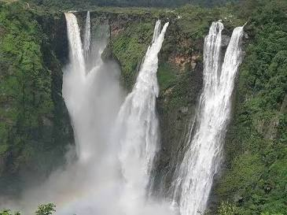
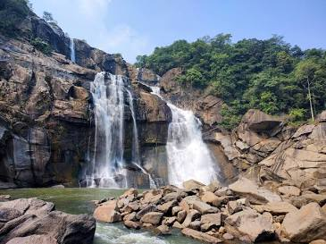
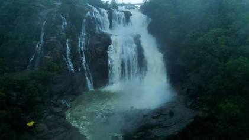
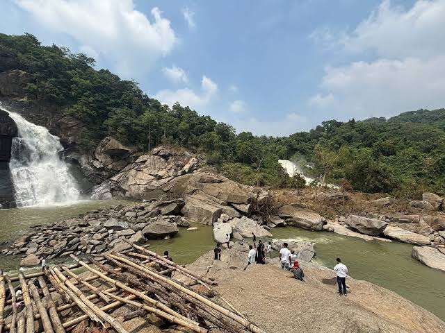
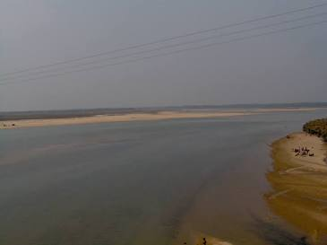

Approximate height of the major waterfall drop.

JHARKHAND • WATERFALL EXPLORER
Hundru Falls
Where the Subarnarekha River takes the plunge.
Discover one of Jharkhand's most remarkable waterfalls, where the Subarnarekha River descends dramatically through the rugged landscape of the Ranchi Plateau.
SCROLL TO EXPLORE
↓
AT A GLANCE
The Falls in Numbers
The river connected with Hundru Falls.
Located in Ranchi district in eastern India.
Rainfall greatly increases the waterfall's flow.

01
THE GREAT DESCENT
ABOUT HUNDRU FALLS
A dramatic drop carved by the Subarnarekha
Hundru Falls is one of the most prominent waterfalls of Jharkhand. The Subarnarekha River plunges from the elevated Ranchi Plateau, creating a spectacular vertical drop surrounded by rugged rocks and forest.
During the monsoon, increased rainfall strengthens the river flow and gives the waterfall a more powerful and dramatic appearance.
LOCATION
Ranchi District, Jharkhand
RIVER
Subarnarekha River
HEIGHT
≈ 98 metres / 322 feet
LANDSCAPE
Ranchi Plateau & rocky terrain
FOLLOW THE WATER
From River to Falls
Trace the connection between the Subarnarekha River and Hundru Falls.
SUBARNAREKHA RIVER
↓
HUNDRU FALLS
98 M DROP
downstream
01
Subarnarekha River
The Subarnarekha flows through the Chotanagpur region and interacts with the elevated plateau landscape.
02
Plateau Edge
A sharp change in elevation creates the dramatic break in the river's course.
03
Hundru Falls
The river plunges approximately 98 metres, creating the spectacular waterfall.
SCALE OF THE FALL
Experience the 98 Metre Drop
Drag the slider to visualize the scale of Hundru Falls.
98 m
0 m
98
metres
The full approximate height of Hundru Falls.
ROCK & GEOLOGY
Water meeting the Ranchi Plateau
Hundru Falls is set within the rugged landscape of the Chotanagpur Plateau. The river encounters a pronounced change in elevation, producing the waterfall's dramatic descent.
Exposed rock surfaces, steep slopes and long-term river erosion contribute to the distinctive terrain around the falls.
02
ROCKY LANDSCAPE
CHANGE WITH THE WEATHER
Hundru Through the Seasons
Compare how seasonal rainfall changes the character of the falls.

MONSOON
PEAK FLOW
Powerful and dramatic
Monsoon rainfall increases the Subarnarekha's flow, making Hundru Falls particularly powerful and visually spectacular.
RELATIVE FLOW
100%
SEE IT FROM DIFFERENT ANGLES
Viewpoint Explorer
Explore different perspectives of Hundru Falls.
01
/ 03
SELECTED VIEWPOINT
Full Waterfall View
A broad perspective reveals the full vertical descent and the rocky landscape surrounding Hundru Falls.
BEYOND THE WATERFALL
Landscape Around Hundru
Explore the waterfall, rocks, river and surrounding landscape.


EXPLORE MORE
Nearby Attractions
Add these destinations to your Jharkhand exploration.
Jonha Falls
A scenic waterfall in the Ranchi region surrounded by forested plateau landscapes.
Dassam Falls
A dramatic waterfall created by the Kanchi River, known for its rocky surroundings.
Getalsud Dam
A major reservoir associated with the Subarnarekha river system and a scenic destination near Ranchi.
Kanke Dam
A popular waterbody and recreational landscape near Ranchi.
FIND HUNDRU FALLS
Location & Map
Hundru Falls is located in Jharkhand, near Ranchi.
⌖
Hundru Falls
Jharkhand, India
RESEARCH & REFERENCES
Sources
Information and destination references used for this explorer page.